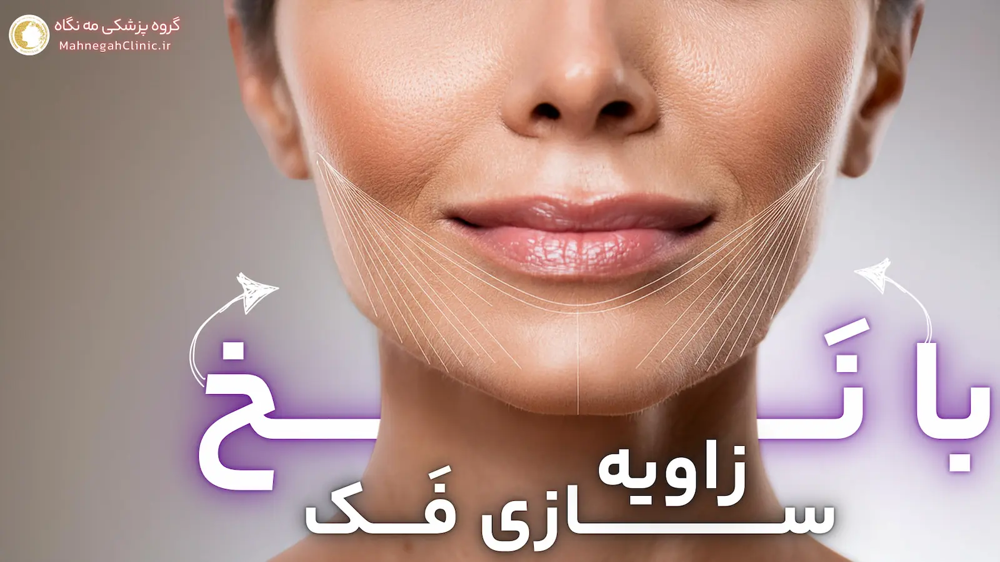
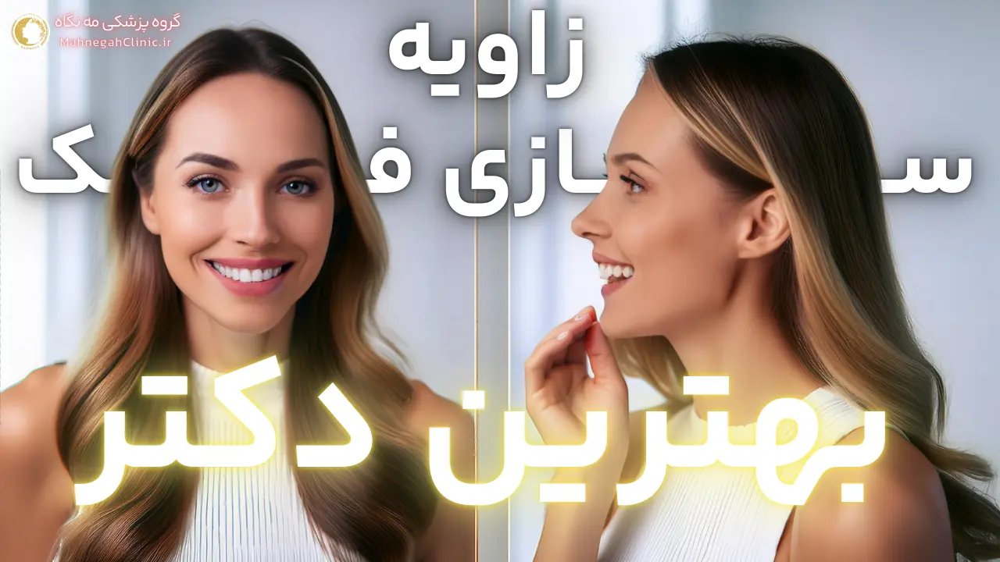

لیزر موهای زائد صورت در سعادت آباد 😍 بدون دردسر
لیزر موهای زائد صورت در سعادت آباد چقدر هزینه دارد؟ بهترین مرکز آن کجاست، توسط دکتر انجام میشود یا اپراتور؟ گران است یا ارزان؟ جواب سوالات اینجا
خانه / مجله
پاسخ به سوالات زیبایی، زاویه فک، هایفوتراپی، لیزر و جوانسازی پوست.
لیزر موهای زائد صورت در سعادت آباد چقدر هزینه دارد؟ بهترین مرکز آن کجاست، توسط دکتر انجام میشود یا اپراتور؟ گران است یا ارزان؟ جواب سوالات اینجا

هزینه هایفوتراپی شکم در سعادت آباد و بهترین دکتر و مرکز انجام با قیمت مقرون به صرفه. تعداد جلسات و تمامی مواد مورد نیاز.

بهترین دکتر هایفوتراپی شکم در سعادت آباد را در کئتم کلینیک میتوان پیدا کرد؟ هزینه و قیمت آن چقدر است و چند جلسه طول میشکد؟

بهترین مرکز هایفوتراپی شکم در سعادت آباد کدام کلینیک یا مرکز زیبایی است؟ قیمت و هزینه آن چقدر است، چند جلسه؟ دکتر خوب کیست؟

هزینه هایفوتراپی غبغب در سعادت آباد چقدر است و دکتر و قیمتی که میگیرد. چند جلسه طول میکشد و نتیجه آن چقدر ماندگار است؟ و سایر سوالات

بهترین دکتر هایفوتراپی غبغب در سعادت آباد چقدر هزینه میگیرد و قیمت خدمات او چقدر است. آیا در غرب تهران بهتر از او هم داریم؟ مه نگاه

بهترین مرکز هایفوتراپی غبغب در سعادت آباد که هم هزینه و قیمت مقرون به صرفه داشته باشد هم توسط دکتر مجرب انجام شود.

هزینه هایفوتراپی صورت در سعادت آباد چقدر است؟ قیمت مقرون به صرفه ای دارد؟ چند جلسه نیاز است؟ چه دکتری خوب است؟

بهترین دکتر هایفوتراپی صورت در سعادت آباد که قیمت و هزینه مناسب داشته باشد را میتوانید در گروه پزشکی مه نگاه ملاقات کنید.

بهترین مرکز هایفو صورت در سعادت آباد را بی شک میتوان گروه پزشکی مه نگاه دانست. قیمت، هزینه و کیفیت عالی

هایفوتراپی شکم در سعادت آباد میتواند با صرف هزینه اندک و قیمت مناسب جایگزینی آسان و خوب برای جراحی های پر زحمت لاغری باشد.

هایفوتراپی غبغب در سعادت آباد: با جدیدترین تکنولوژی هایفو، غبغب خود را بدون جراحی و درد از بین ببرید. قیمت + روش + هزینه

هایفوتراپی صورت در سعادت آباد در بهترین مرکز زیبایی با هزینه و قیمت مقرون به صرفه برای جوانسازی و صاف کردن پوست صورت و تجربه مجدد جوانی.

دکتر زاویه سازی صورت در تهران چه خدماتی ارائه میدهد؟ چگونه بهترین دکتر را پیدا کنیم؟ اینستاگرام، فیلرها و تکنیکهای زاویه سازی صورت.

جراحی زیبایی زاویه سازی فک چه برای آقایان - مردان و چه برای خانم ها - زنان میتواند با صرف هزینه اندک راه گشا باشد.

ورزش برای زاویه سازی فک مردان میتواند از بهترین راه های ممکن و بدون هزینه باشد اما در مقابل زاویه سازی با ژل و فیلر چطور؟

اگر میخاهاید بدانید دکتر زاویه سازی فک چطور و با چه هزینه ای میتواند صورت شما را زاویه دار کند، تمام سوالات اینجاست.

اگر میخاهیاد بدانید زاویه سازی فک با نخ چیست و چه هزینه هایی دارد یا از چه روشی استفاده میشود یه بهترین دکتر آن کیست، بیاید اینجا!

بدیهی است که ورزش برای زاویه سازی فک زنان از کارهای نتیجه بخشی است که صورت را زاویه دار میکند اما چگونه؟ در این مطلب میبیند.

برای انتخاب بهترین دکتر زاویه سازی فک در تهران، روش کار او، هزینه ها، قیمت و مراقبت های قبل و بعد بخوانید.

اگر میخواهید بدانید زاویه سازی فک با ژل بهتر است یا چربی، جواب آن فقط یک گزینه است و آن هم اینکه هزینه، روش و سایر موارد بستگی دارد.

تو چی فکر میکنی؟ زاویه سازی فک با آدامس یا سقز میتونه تاثیر روی زاویه دار کردن فکت داشته باشه یا باید رفت سرغ جراحی و ژل؟

بهترین دکتر زاویه سازی فک باید به شما دید کاملی از روش، روند، هزینه، قیمت و مراقبت های بعد را ارائه کند. مشاوره رایگان

زاویه سازی فک با ورزش آیا واقعا امکان دارد یا بهتر است از روش دیگر مثل فیلر و جراحی استفاده کنیم؟ نمونه ورزش های آن کدامند.

جراحی زاویه فک: روشی برای بهبود زیبایی و تناسب چهره. انواع جراحی، مزایا، معایب، آمادگی، روند جراحی و مراقبتهای پس از آن.

هایفوتراپی صورت برای انجام لیفت و جوانسازی پوست بهترین راه حل است. در خصوص قیمت، هزینه، خطرات، مزایا و معایب هایفو تراپی آگاه شوید.